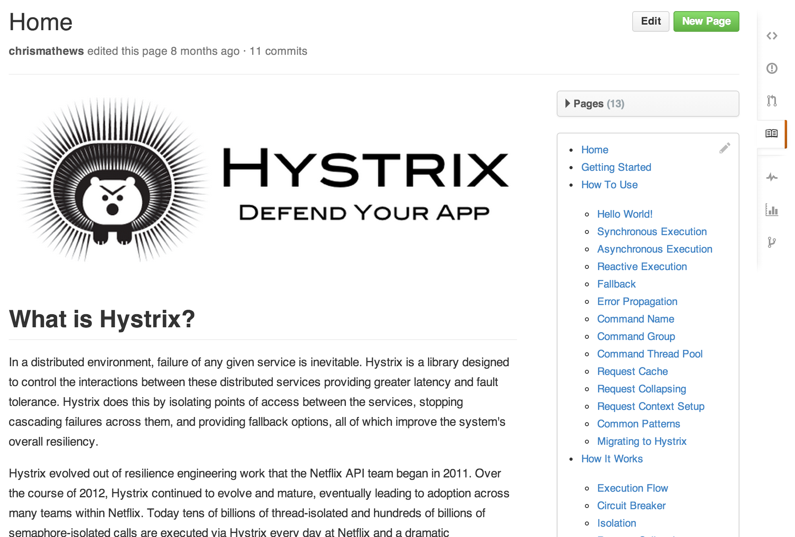

Just as writing good code and great tests are important, excellent documentation helps others use and extend your project.
Every GitHub repository comes equipped with a section for hosting documentation, called a wiki.

GitHub Wikis are a place in your repository where you can share long-form content about your project, such as how to use it, how it's been designed, manifestos on its core principles, and so on. Whereas a README is intended to quickly orient readers as to what your project can do, wikis can be used to provide additional documentation.
With wikis, you can write content just like everywhere else on GitHub. We use our open-source Markup library to convert different formats into HTML, so you can choose to write in Markdown, RST, Textile, or any other supported format when you craft wiki pages.
Wikis can be edited directly on GitHub.com, or you can work with a text editor offline and simply push your changes. Wikis are collaborative by design. By default, every GitHub user can make changes to public wikis, but you can configure this to be enabled only for collaborators on your repository.